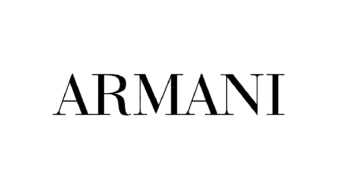

Ele nasceu em 5 de fevereiro de 1985, na ilha da Madeira, Portugal. Ronaldo é amplamente considerado um dos melhores jogadores de futebol de todos os tempos.
A carreira de Ronaldo começou em Portugal, onde ele jogou pelo Sporting CP antes de se transferir para o Manchester United, da Inglaterra, em 2003.
Ele ganhou vários títulos importantes com o Manchester United, incluindo três títulos da Premier League e uma Liga dos Campeões da UEFA.
Em 2009, Ronaldo foi transferido para o Real Madrid, da Espanha, em uma transferência recorde na época. Ele se tornou uma figura icônica no Real Madrid, estabelecendo recordes de gols e conquistando inúmeros troféus. Durante sua passagem pelo Real Madrid, ele conquistou quatro Liga dos Campeões da UEFA e quatro Bolas de Ouro da FIFA.
Em 2018, Ronaldo se transferiu para a Juventus, da Itália, em outra transferência de destaque. Ele continuou a mostrar sua habilidade e talento na Itália, ajudando a Juventus a conquistar títulos da Serie A. Em agosto de 2021, Ronaldo retornou ao Manchester United.